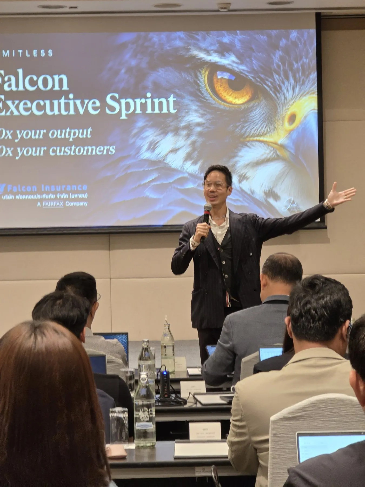
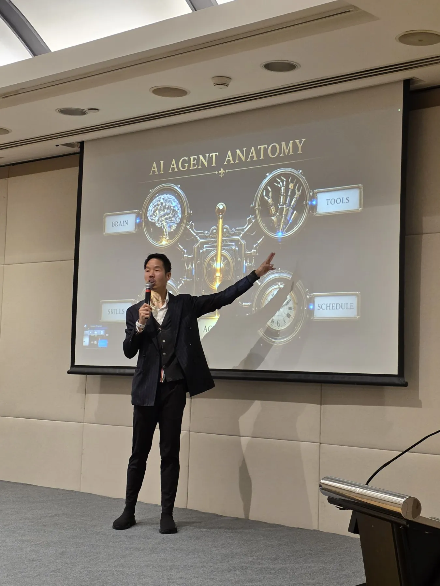

Case Study · Insurance · 6 November 2026
Falcon Insurance: From Hesitating on AI to a Company-Wide Plan
Falcon Insurance brought its executive team to a one-day private workshop. They left with a shared understanding of AI and a plan to cut repetitive work across the company.

The challenge
Falcon Insurance Public Company Limited, a Fairfax company, runs on paperwork, multi-step processes and a large team handling repetitive tasks. Several executives already used ChatGPT or Claude for email and research, but adoption had stalled.
- AI was used as a chat box only, not connected to the tools people use every day.
- Executives felt behind younger colleagues who were already using AI.
- Nobody was sure which AI tools were safe for the organization, so new tools went untested.
“We weren't sure which AI tools were safe for the organization, so we didn't dare try new ones.”CEO
Inside the room
The day was hands-on from the first hour. Executives covered how AI works and where it fits in an insurer, then practiced with Skills, connected AI to the apps they already use, and had AI design templates and dashboards for their own work.
“I never thought it could design templates and dashboards for us.”Executive, Accounting & Finance

What changed
Four executives recorded unscripted reviews at the end of the day and scored the workshop 10, 10+, 11 and 11 out of 10.
Asked how much his understanding of AI had changed, an insurance operations executive answered in four words: "At least ten times." He added that he can now work with younger colleagues who know AI well and talk with them with real understanding.
The plan they left with
The CEO described three next steps:
- A personal AI assistant to handle incoming information that needs a response.
- Mapping where repetitive, people-heavy work sits across the company.
- Building in-house Skills from what the team learned on the day.
The company named the initiative Small AI, Big Impact, with a goal of reducing repetitive work by about 40% within a year. Her view on whether that is realistic: "It doesn't look hard."
Follow-through
Each participant receives a 90-day follow-through kit: a personal plan with one new project, two upgrades and one weekly metric, ready-to-use prompts for insurance work, and a chat-sales playbook for front-line teams.
“I'd give it a ten, but it depends on how much of this we actually put to use.”CEO
In Their Own Words
“We weren't sure which AI tools were safe for the organization, so we didn't dare try new ones. I think we're on the right track bringing our executives to learn this.”
CEO · Insurance
“เราไม่มั่นใจว่า AI ตัวไหนปลอดภัยสำหรับองค์กร ทำให้ไม่กล้าลอง AI ตัวใหม่ ๆ คิดว่าเรามาถูกทางแล้ว ที่พาผู้บริหารมาเรียนเรื่องนี้”
“At least ten times. Before, we only used it to review messages or analyze Excel data. It can actually do far more than that.”
Executive · Insurance operations
“อย่างน้อยสิบเท่า เมื่อก่อนใช้แค่ให้ช่วยรีวิวข้อความ หรือวิเคราะห์ Data ใน Excel แต่จริง ๆ มันทำได้เยอะกว่านี้มาก”
“I never thought it could design templates and dashboards for us. I don't see it as just a helper. It's a must.”
Executive · Accounting & Finance
“ไม่คิดว่ามันจะออกแบบ Template กับ Dashboard ให้เราได้ ผมไม่ได้มองว่ามันเป็นแค่ตัวช่วย มันคือสิ่งที่ต้องมี”
“It's a real shortcut. Before, I had to dig through YouTube. Today I got all of it, from the basics to working with Claude.”
Executive
“มันเป็นการ shortcut เลยค่ะ จากเดิมต้องนั่งหาจาก YouTube วันนี้ได้ทั้งหมดเลย ตั้งแต่พื้นฐานจนถึงการทำงานร่วมกับ Claude”